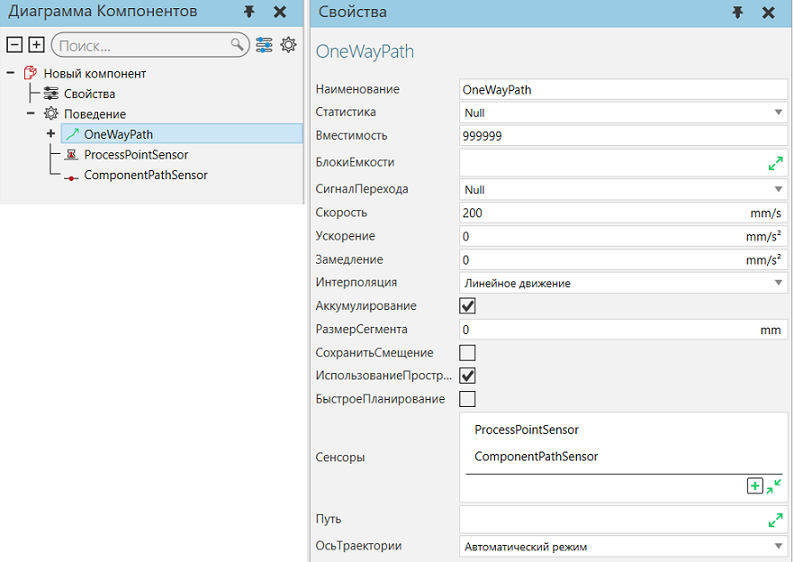
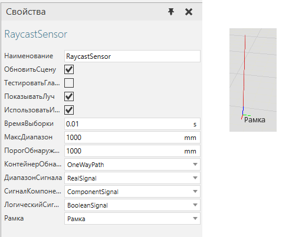
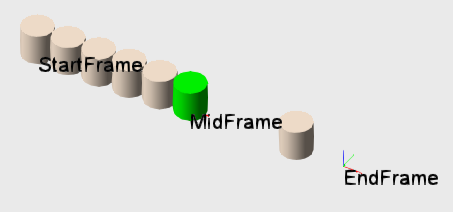

Тип поведения датчик используется для обнаружения компонентов.

Типы
Название |
Описание |
|---|---|
Обнаруживает компонент, движущийся по пути. |
|
Обнаруживает компонент, движущийся по пути, а затем может либо остановить путь, либо обнаруженный компонент. |
|
Обнаруживает компонент, пересекающий луч, проходящий вдоль оси. |
|
Обнаруживает компонент, пересекающий или находящийся внутри пространства. |
Зона обнаружения
Некоторые датчики должны быть назначены путям для обнаружения компонентов.

Другие датчики могут свободно обнаруживать компоненты в трехмерном мире или фильтроваться, чтобы обнаруживать только компоненты в контейнере.

Лучевой датчик фильтруется для обнаружения компонентов и расстояний на пути
Детектирование сигналов
В большинстве случаев датчики используют сигналы для информирования о другом поведении обнаруженных компонентов. Например, сигналы, используемые датчиками, могут быть подключены к скрипту Python для запуска событий.


Датчик, используемый для запуска процесса в точке пути